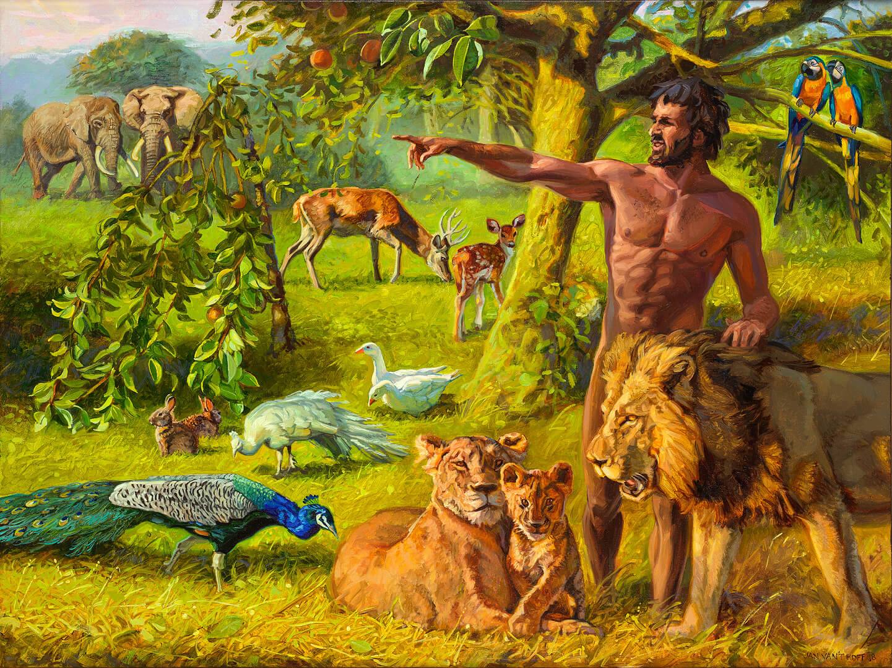

Gods Woord, compleet in één band
Met kanttekeningen en illustraties van Jan van ’t Hoff
Alle 82 openbare Bijbelboeken, inclusief de apocriefe boeken, in één PDF. Met de herziene kanttekeningen onderaan de pagina en alle 126 werken uit de vastgelegde Gospelimages-catalogus van Jan van ’t Hoff.
Bladformaat A3 · 297 × 420 mm, één formaat groter dan de driedelige A4-uitgave. De Bijbeltekst staat in twee kolommen en de kanttekeningen daaronder in drie. Gemarkeerde Godscitaten staan rood en cursief; de Godsnaam is HEERE.
Eén complete uitgave · A3 · 126 illustraties
Ook beschikbaar: de driedelige uitgave met kanttekeningen op A4 en de volledige Bijbel zonder kanttekeningen.
De schilderijen bij de tekst
De afbeeldingen staan volledig en zonder uitsnede tussen de tekst: rechtstreeks tussen de verzen in de tekstkolommen, maximaal een halve pagina groot. De kanttekeningen sluiten direct aan op de tekst. Bij elk schilderij of elke tekening staan de titel en Bijbelplaats. De afbeelding bevat een klikbare link naar de oorspronkelijke toelichting. Naamsvermelding en gebruiksvoorwaarden staan voorin de PDF. Alle werken zijn opgenomen.

Vrije tekst, eigen rechten op de afbeeldingen
De Bijbeltekst en herziene kanttekeningen zijn CC0 / publiek domein. De afbeeldingen zijn © Jan van ’t Hoff / Gospelimages. Daarvoor gelden naamsvermelding, niet commercieel gebruik en geen afgeleide werken. Deze voorwaarden gelden ook wanneer u de geïllustreerde PDF verspreidt. Voor commercieel gebruik van de afbeeldingen is afzonderlijke toestemming nodig.
Bekijk de broncatalogus en gebruiksvoorwaarden bij Gospelimages.